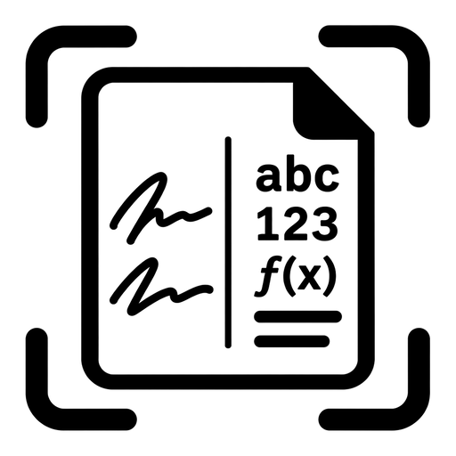
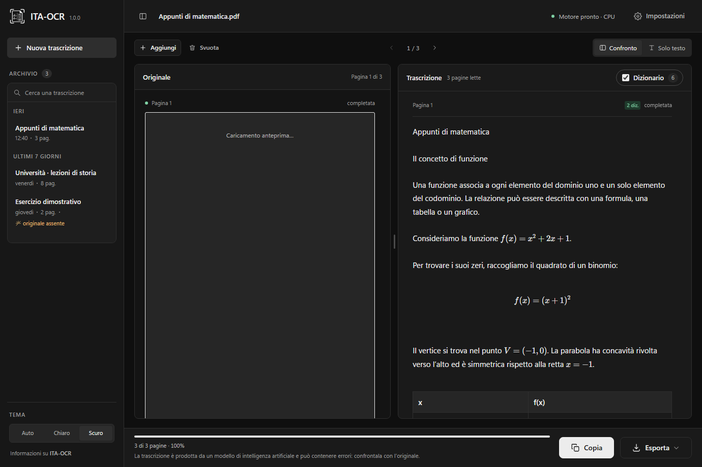
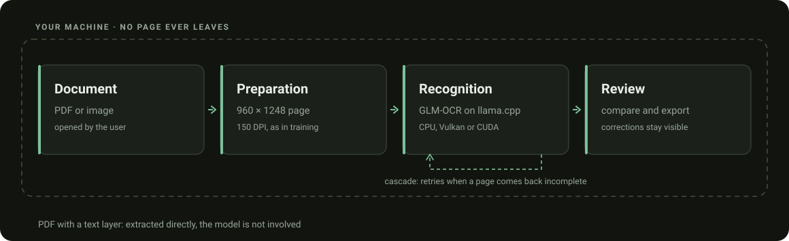
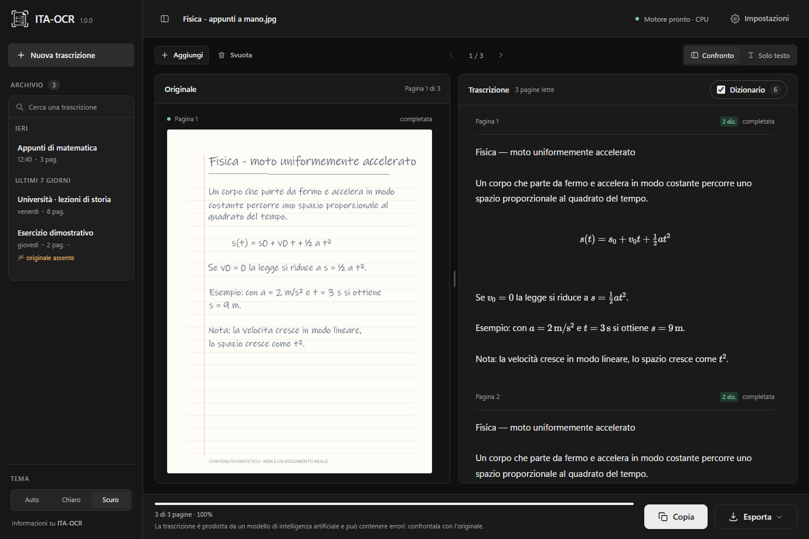
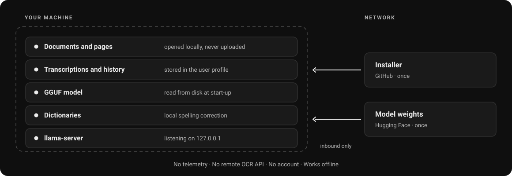

PDFs and images
PDF, PNG, JPEG, TIFF, BMP, WebP and GIF. Page navigation, and OCR can be forced on PDFs with text.

ITA-OCR DownloadTranscribe your pages, check every word and export the result. Built on a fine-tune of GLM-OCR, with no documents uploaded to a cloud service.

Recognition runs on your machine. No remote OCR API processes the pages.
Check the text and the corrections with the document next to it, page by page.
Copy the text or export it to TXT, Markdown and DOCX and carry on working.
One window to import, transcribe and review. The model works behind the scenes through llama.cpp.
Open a PDF or drop an image into the app.
GLM-OCR reads the page. If the PDF already holds text, you can extract it directly.
Compare the output with the original and check the highlighted corrections.
Take the result into your editor, keeping a session in the local history.

PDF, PNG, JPEG, TIFF, BMP, WebP and GIF. Page navigation, and OCR can be forced on PDFs with text.
A public Italian dictionary supports spelling correction. Substitutions stay recognisable.
Read recognised formulas and tables inside the transcription. Always check structure and symbols.
Light, dark or automatic theme. A local history to find your sessions again.
Every figure carries the set it was measured on: a percentage without its set means nothing.
Sealed benchmark, 67 readable pages: from 29.3 down to 18.8.
A 164-page holdout whose writers never appear in training.
The cascade spots a decode that ended badly and retries.
Relative reductions against the base model, not a universal accuracy figure. The final set was consulted several times during development: the measurements are descriptive, not an independent benchmark. Method, conditions and limits in the technical report and in BENCHMARKS.md.

The model also runs on the CPU at the same quality: only the time changes. On the test machine a page goes from a little over a second and a half on the GPU to roughly fifteen seconds on the CPU.
Processor, graphics card, drivers and page complexity change the absolute values: read them as a ratio, not as guaranteed performance. On the CPU most of the time goes into encoding the image.
The engine listens on 127.0.0.1 only. No telemetry, no account, no remote OCR API.

No external processor is involved in the OCR step, there is no transfer to third countries and no server-side copy exists. That is the substantive difference from a cloud OCR service, and it narrows the perimeter in a concrete way.
GDPR compliance remains with the data controller: legal basis, privacy notice, retention, device security and the handling of the local history, which the app stores in the user profile and which uninstalling does not remove. Details in PRIVACY.md.
The complete installer already contains the models. After installation the application works offline.
Per-user x64 installer. The complete installation ships the app, the engine, the runtime, the public dictionaries, the licences and both GGUF models.
Download the .exe installerRequires WebView2. About 2.1 GB installed, or 1 GB if you pick the installation without the models.
An x86-64 AppImage: a single executable file that installs nothing and touches nothing in the system. It carries the app, the engine, the CPU and Vulkan backends, PDFium and the public dictionaries.
Download the AppImageRequires glibc 2.39 or newer, GTK 3, WebKitGTK 4.1 and libsoup 3. About 36 MB, plus 1.3 GB of weights downloaded separately.
On Linux they are always needed, because the AppImage does not contain them: another 1.3 GB would exceed GitHub's limit for a release asset. On Windows they are optional — the complete installer already carries them — and you take them from here if you picked the installation without the models, if you use the portable folder, or if you want them on another drive through OCR_ITA_MODELS.
The dataset stays private and is not needed to use the app.
CPU, or a GPU compatible with Vulkan or CUDA. The backend depends on hardware and drivers, and the application shows the one in use. The Linux AppImage carries CPU and Vulkan: CUDA has to be compiled on the machine that will use it. Both packages are x86-64.
ITA-OCR combines Tauri, Rust and llama.cpp with a fine-tune of GLM-OCR. The original code is MIT; the dependencies keep their own licences.
If ITA-OCR was useful to you or you liked the project, consider leaving a star on GitHub. It helps others discover the project.
To download the installer, yes. After that, no: recognition runs locally and the app works offline.
No. The engine can use Vulkan on compatible GPUs, or the CPU. CUDA is an option for NVIDIA hardware. Performance depends on the configuration.
No. Difficult handwriting, formulas and complex layouts can cause errors. The interface puts the result next to the original precisely to make checking easy.
No. Recognition happens on your machine and the engine listens on the loopback address only. The network is used to download the installer, once.
No. The dataset stays private and is part of no download. The code is on GitHub and the weights are also on Hugging Face; the dataset is nowhere.
On Windows, not with the complete installation: both GGUF files are already inside the installer and the app finds them by itself on first start. You need them separately if you pick the lightweight installation, if you use the portable folder, or if you would rather keep them elsewhere. On Linux they are always needed: the AppImage does not contain them, and they go in a models folder next to it.
For Linux, yes: an x86-64 AppImage that installs nothing and touches nothing in the system. It needs glibc 2.39 or newer and the GTK 3, WebKitGTK 4.1 and libsoup 3 libraries from your distribution. For macOS, no, and none is planned.